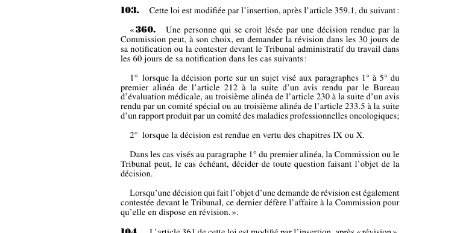

art-103-LMRSST : insère le nouvel art. 360 LATMP
Insère dans la LATMP, après art. 359.1, le nouvel art. 360 : dans certains dossiers, la personne lésée choisit elle-même entre la révision administrative et la contestation directe au Tribunal.
- Révision devant la Commission : 30 jours de la notification de la décision.
- Contestation devant le Tribunal administratif du travail : 60 jours de la notification.
- Premier cas d'ouverture : décision portant sur un sujet des paragraphes 1° à 5° du premier alinéa de art. 212 rendue après avis du Bureau d'évaluation médicale, sur le troisième alinéa de art. 230 après avis d'un comité spécial, ou sur le troisième alinéa de art. 233.5 après rapport d'un comité des maladies professionnelles oncologiques.
- Second cas d'ouverture : toute décision rendue en vertu des chapitres IX ou X de la LATMP.
- Double saisine : si une décision déjà en révision est aussi contestée au Tribunal, celui-ci défère l'affaire à la Commission pour qu'elle en dispose en révision.
📄 PDF officiel (page 36) · 🌐 LegisQuébec
Texte officiel
Cette loi est modifiée par l’insertion, après l’article 359.1, du suivant :
« 360. Une personne qui se croit lésée par une décision rendue par la Commission peut, à son choix, en demander la révision dans les 30 jours de sa notification ou la contester devant le Tribunal administratif du travail dans les 60 jours de sa notification dans les cas suivants :
1° lorsque la décision porte sur un sujet visé aux paragraphes 1° à 5° du premier alinéa de l’article 212 à la suite d’un avis rendu par le Bureau d’évaluation médicale, au troisième alinéa de l’article 230 à la suite d’un avis rendu par un comité spécial ou au troisième alinéa de l’article 233.5 à la suite d’un rapport produit par un comité des maladies professionnelles oncologiques;
2° lorsque la décision est rendue en vertu des chapitres IX ou X.
Dans les cas visés au paragraphe 1° du premier alinéa, la Commission ou le Tribunal peut, le cas échéant, décider de toute question faisant l’objet de la décision.
Lorsqu’une décision qui fait l’objet d’une demande de révision est également contestée devant le Tribunal, ce dernier défère l’affaire à la Commission pour qu’elle en dispose en révision. ».
Texte de l’article 103 LMRSST, extrait de la couche texte du PDF officiel (page 36), sans OCR ni retouche. La capture ci-dessous et le PDF font foi.
{kind=link}

Toucher l'image pour l'agrandir🔗 Ouvrir a cette page : LMRSST.pdf : page 36
- Insère un nouvel article dans la Loi sur les accidents du travail et les maladies professionnelles (RLRQ c. A-3.001), après art. 359.1.
- Le choix entre les deux voies appartient à la personne qui se croit lésée, et non à la Commission.
Portée et effet
Adopté dans le cadre de la réforme de 2021 modernisant le régime de santé et de sécurité du travail, l'article 103 de la LMRSST insère une nouvelle disposition dans la LATMP, à la suite de art. 359.1 LATMP. Le texte en vigueur de la disposition visée intègre désormais cette modification ; le libellé exact figure dans la capture officielle ci-dessus. Le chapitre I de la LMRSST réforme la LATMP : comité scientifique des maladies professionnelles, réadaptation et retour au travail, indemnités, procédures et recours.
La jurisprudence porte sur la disposition insérée, art. 360 LATMP, et non sur l'article modificateur lui-même (les décisions et leurs PDF sont rassemblés sur la page de cet article).
Voir aussi
- 🎯 Disposition insérée : art. 360 LATMP · révision en 30 jours ou contestation au TAT en 60 jours.
- 📍 Point d'insertion : art. 359.1 LATMP
- 🗓️ Entrée en vigueur : 6 avril 2023 (art. 313 ¶3) (voir art. 313 LMRSST)
- 🔧 Dispositions de concordance : art. 104 LMRSST, art. 107 LMRSST
- 📚 Chapitre : Chap. I : modifications à la LATMP
- ↑ Loi : LMRSST
Pages qui pointent ici (5)
- art-104-LMRSST : modifie l'art. 361 LATMP Recueil législatif
- art-107-LMRSST : modifie l'art. 365 LATMP Recueil législatif
- art-302-LMRSST : transition Recueil législatif
- art-359.1-LATMP : contestation directe au TAT, financement Recueil législatif
- LMRSST : Chapitre I : Modifications à la LATMP Recueil législatif